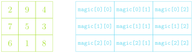

The click_action function specifies
what to do when the mouse is clicked
Note that it has access to the gw
variable since it is in the enclosing function and thus in the
closure.
Registering a Listener
The last line of our example function:
gw.add_event_listener("click", click_action)
tells the graphics window (gw) to call
the click_action function whenever a mouse
“click” occurs within the window.
When the user clicks the mouse, the graphics window, in essense,
calls the client back to let them know that a click has occured. Thus,
functions such as click_action are known as
callback functions.
The parameter event given to the
callback function is a special data structure called a mouse
event, which contains details about the specifics of the event that
triggered the action.
Types of Events
Name
Description
"click"
The user clicks the mouse in the
window
"dblclk"
The user double-clicks the mouse in the
window
"mousedown"
The user presses the mouse button
down
"mouseup"
The user releases the mouse button
"mousemove"
The user moves the mouse
"drag"
The user moves the mouse with the button
down
More Graphics Object: Fillable Arcs
The GArc class is a
GFillableObject, and so you can call
.set_filled() on a
GArc object
Filled like a pie-shaped wedge formed between the center of the
bounding box and the starting and end points of the arc
Used to represent graphical objects bounded by line segments
Polygons consist of several vertices bounded by
edges
Location not fixed in upper left, but at some convenient reference
point
Often a convenient reference point is near the center of the object,
but it doesn’t need to be
GPolygons are
GFillableObjects, so they can be filled
Polygonal Construction
The GPolygon function creates an
empty polygon, to which you then can add vertexes
Can create a vertex by calling
.add_vertex(x,y) on the
GPolygon object
x and y
measured relative to the reference point
Vertexes past the first can be defined in a few ways:
.add_vertex(x,y) adds another new vertex
relative to the reference point
.add_edge(dx,dy) adds a new vertex
relative to the preceding vertex
.add_polar_edge(r, theta) adds a new
vertex relative to the previous using polar coordinates
Ch-8: Arrays and Lists
From the earliest days, programming languages have supported the
idea of an array, or an ordered sequence of values.
Individual values in an array are called elements, and the
number of elements is the length of the array.
Each element’s position in the array is given by its index,
with index numbers starting at 0 and extending up to 1 less than the
length of the array
Python implements the array concept in a bit more general form
called a list.
Mutants
The most important difference between strings and lists is one of
mutability
Strings we have already identified as being immutable: you
can not change the individual elements
Lists, in contrast, are mutable, which means that we
can change or assign new values to the elements of a
list
Immutable objects have many advantages in programming:
You don’t have to worry about if the values will change
Immutable values can be more easily shared
Immutable objects are easier to use with concurrent programs
In some situations though, mutable objects are the perfect tool for
the job
For Reference
When working with mutable objects, it is better to think of the
variable as holding a reference to the object, rather than the
actual contents of the object
I find it useful to think of a reference as the “address” in memory
where that object’s contents can be found
This undeniably complicates things, as referencing a mutable object
lets you change it, which will immediately be reflected in anything
else that referenced that object
Mutable objects can be terrific to work with, as their mutability
makes them very flexible, but be wary of unexpected behavior
Lists as Arguments
When you pass a list as an argument to a function or return a list
as a result, only the reference to the list is actually
passed back and forth
This means that the elements of the list are effectively shared
between the function and the caller
Changes that the function makes to the elements
will persist after the function returns
What can we do in these sorts of instances to not let mutability
trip us up?
Clone the list instead of just assigning a reference
Creates a new object in memory
Several ways you can make a shallow clone (in code)
Using the .copy() list method
Any slice always returns a new object
Using the list() function will return a
new object
Common Useful List Methods
Method
Description
list.copy()
Returns a new list whose elements are the same as the original
list.append(value)
Adds value to the end of the list
list.insert(idx, val)
Inserts val before the specified
idx
list.remove(value)
Removes the first instance of value from
the list, or errors
list.reverse()
Reverses the order of the elements in the list
list.sort()
Sorts the elements of the list. Can take an optional argument
key to specify how to sort
Lists Comprehension
The simplest list comprehension syntax is:
[ expression iterator ]
where expression is any Python expression
and iterator is a
for loop header
The iterator component can be followed by any number of
additional modifiers
More for loop headers for nested
loops
or if statements to select specific
values
Example: all even numbers to 20 not also visible by 3
[i for i in range(0,20,2) if i % 3 != 0]
Multidimensional Arrays
We know that elements of a list can be lists in and of
themselves. If the lengths of all the lists making up the elements of a
list remain fixed, then the list of lists is called a
multidimensional array
In Python, we can create multidimensional arrays just by creating
lists of constant length as the elements to another list
magic = [ [2, 9, 4], [7, 5, 3], [6, 1, 8] ]
We can always get the individual element of one of the inner
lists by using 2 indices.
magic[1][1] = 5
magic[-1][0] = 6
Picturing Multidimensional Arrays
Multidimensional arrays are commonly pictured as each inner list
being stacked beneath the previous
In such a representation, the outermost/first elements/indices
represent the row, and the inner/second elements/indices represent the
column
[ [2, 9, 4], [7, 5, 3], [6, 1, 8] ]

Reading
Programs often need to work with collections of data that are too
large to reasonably exist typed all out in the code
Easier to read in the values of a list from some external data
file
A file is the generic name for any named collection of data
maintained on some permanent storage media attached to a computer
Files can contain information encoded in many different ways
Most common is the text file
Contains character data like you’d find in a string
Strings vs Text Files
While strings and text files both store characters, there are some
important differences:
The longevity of the data stored
The value of a string variable lasts only as long as the string
exists, is not overridden, or is not thrown out when a function
completes
Information in a text file exists until the file is deleted
How data is read in
You have access to all the characters in a string variable pretty
much immediately
Data from text files is generally read in sequentially, starting
from the beginning and proceeding until the end of the file is
reached
Reading Text Files
The general approach for reading a text file is to first
open the file and associate that file with a variable, commonly
called its file handle
We will also use the with keyword to ensure that Python
cleans up after itself (closes the file) when we are done with it (Many
of us could use a with irl)
with open(filename) as file_handle:
# Code to read the file using the file_handle
Python gives you several ways to actually read in the data
read reads the entire file in as a
string
readline or
readlines reads a single line or lines from
the file
read alongside
splitlines gets you a list of line
strings
Can use the file handle as an iterator to loop over
Entire file ⟶ String
The read method reads the entire file
into a string, with includes newline characters
(\n) to mark the end of lines
Simple, but can be cumbersome to work with the newline
characters, and, for large files, it can take a large amount of
memory
As an example, the file:
One fish two fish red fish blue fish
would get read as
"One fish\ntwo fish\nred fish\nblue fish"
Line by Line
Of the ways to read the file in a string at a time, using the
file handler as an iterator and looping is probably best and certainly
most flexible
Leads to code that looks like:
with open(filename) as f:
for line in f:
# Do something with the line
Note that most strategies preserve the newline
character, which you very likely do not want, so be ready to strip them
out before doing more processing
Powers Combined
So long as your files are not gigantic, using
read and then the
splitlines method can be a good
option
This does remove the newline characters, since
it splits the string at them
with open(filename) as f:
lines = f.read().splitlines()
# Then you can do whatever you want with the list of lines